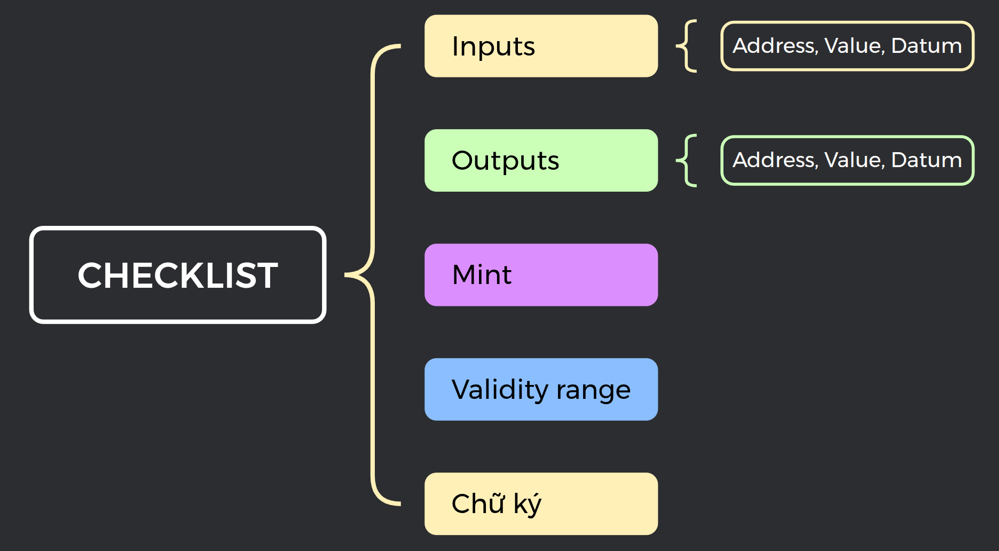
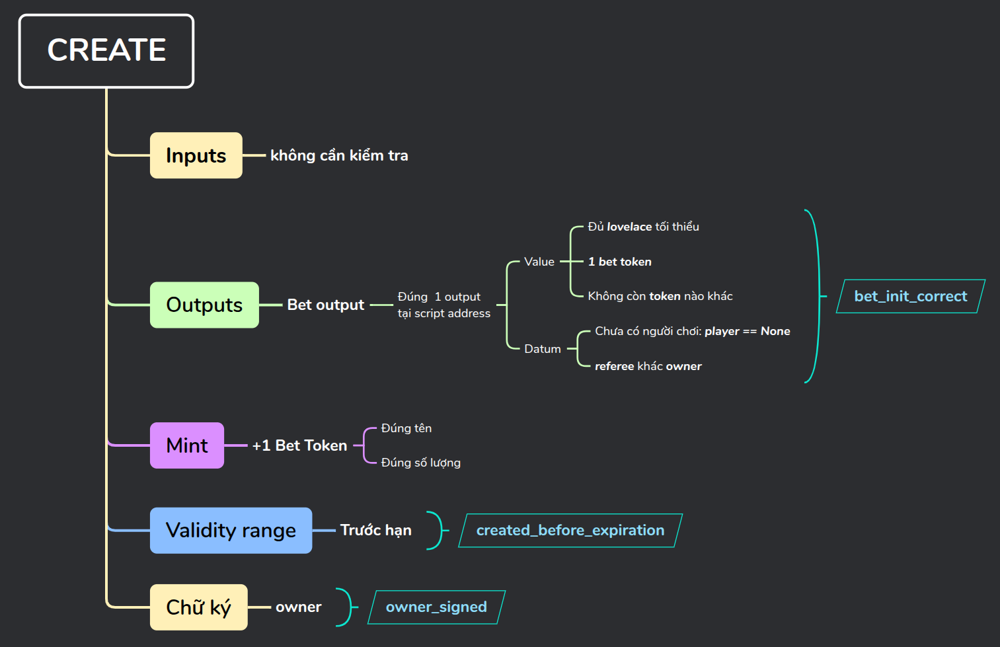
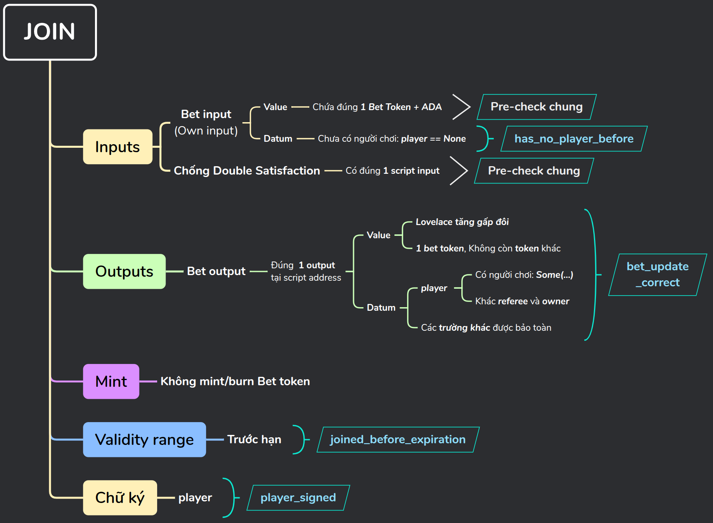
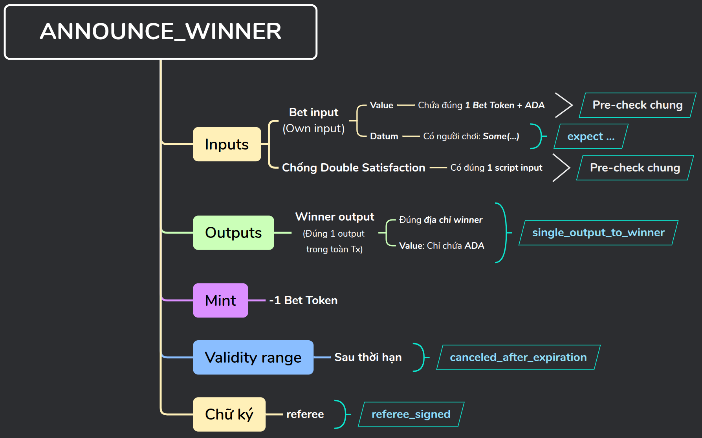
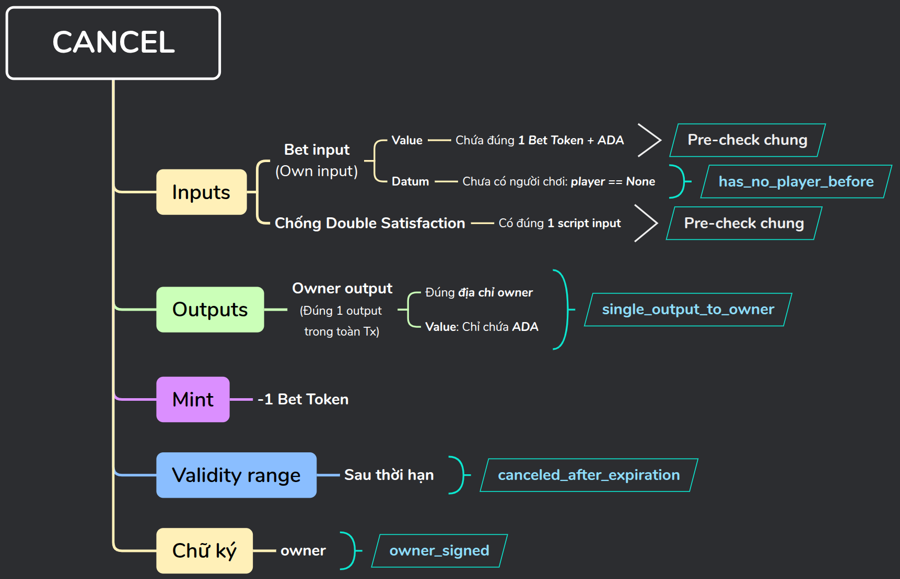

Mục lục bài học
Ở Bài 1, chúng ta đã tìm hiểu luật chơi và vòng đời của một bet. Trong bài này, chúng ta sẽ chuyển các quy tắc đó thành mã hợp đồng thông minh on-chain hoàn chỉnh bằng ngôn ngữ Aiken.
Trong vòng đời của một ván cược, có 4 loại hành động tương tác với validator. Để xác định trách nhiệm của từng handler đối với mỗi hành động, trước hết hãy xem hành động đó có tiêu thụ Bet UTxO hoặc mint/burn Bet Token hay không:
| Hành động | Tiêu thụ Bet UTxO? | Mint/Burn Bet Token? | Nhiệm vụ | Handler được kích hoạt |
|---|---|---|---|---|
CREATE |
Không | Mint | Tạo Bet UTxO ban đầu tại Script | mint |
JOIN |
Có | Không | Tạo Bet UTxO tiếp nối (cập nhật Player) | spend |
ANNOUNCE_WINNER |
Có | Burn | Đóng bet và giải ngân tiền cược cho người thắng | spend và mint |
CANCEL |
Có | Burn | Đóng bet và hoàn trả tiền cọc cho Chủ phòng | spend và mint |
Hành động CREATE không tiêu thụ Bet UTxO, nó đúc 1 Bet Token và tạo trạng thái ban đầu trong một Bet UTxO mới. Do đó, mint handler kiểm tra cả thao tác mint lẫn tính hợp lệ của Bet UTxO mới.
Ba hành động còn lại đều tiêu thụ Bet UTxO nên đều kích hoạt spend handler. Trong đó, JOIN được kiểm tra hoàn toàn bởi spend handler. Riêng ANNOUNCE_WINNER và CANCEL còn đốt Bet Token nên kích hoạt đồng thời cả mint handler. Với 2 hành động này, toàn bộ logic kiểm tra nghiệp vụ chính được đặt tại spend handler; còn mint handler chỉ thuần túy làm nhiệm vụ kiểm tra việc đốt token hợp lệ.
Trong dApp này, mỗi Bet UTxO đại diện cho một ván cược độc lập. Datum lưu trữ những dữ liệu validator cần để kiểm tra các hành động của bet:
| Trường | Kiểu dữ liệu | Ý nghĩa |
|---|---|---|
owner |
Address |
Địa chỉ của người tạo bet (Chủ phòng) |
player |
Option<Address> |
None trước khi có người tham gia; Some(address) sau khi JOIN |
referee |
Address |
Địa chỉ ví của Trọng tài được quyền công bố kết quả |
expiration |
Int |
Thời điểm hết hạn, tính bằng POSIX milliseconds |
Khai báo cấu trúc BetDatum trong Aiken:
pub type BetDatum {
owner: Address,
player: Option<Address>,
referee: Address,
expiration: Int,
}Trạng thái ứng dụng được suy ra từ trường player và mốc thời gian hiện tại so với expiration. Frontend tự động tính toán các trạng thái này, vì vậy Datum không cần lưu thêm trường trạng thái riêng:
Giá trị player |
Mốc thời gian | Trạng thái suy diễn |
|---|---|---|
None |
< expiration |
OPEN |
None |
>= expiration |
EXPIRED |
Some(...) |
< expiration |
CLOSED |
Some(...) |
>= expiration |
AWAITING_RESULT |
Redeemer của spend handler biểu diễn ba hành động mà nó xử lý:
pub type Action {
JOIN
ANNOUNCE_WINNER { is_owner_win: Bool }
CANCEL
}Riêng hành động ANNOUNCE_WINNER cần thêm thông tin để xác định người thắng. Do ván cược chỉ có hai người chơi, chúng ta chỉ cần một trường Boolean is_owner_win cho biết Owner có thắng hay không; không cần truyền trực tiếp địa chỉ người thắng. Với hành động JOIN, địa chỉ Player được ghi trực tiếp vào Datum mới nên Redeemer không cần chứa địa chỉ này.
Mint handler phân biệt thao tác đúc/đốt dựa vào số lượng trong trường mint (1 là đúc, -1 là đốt). Vì vậy, để đơn giản chúng ta không cần tạo thêm kiểu redeemer riêng cho mint handler.
Validator nhận hai tham số cấu hình cố định:
bet_token_name: ByteArray: Tên token, dùng để xác định chính xác Bet Token của dApp.minimum_bet_amount: Int: Số lovelace tối thiểu Chủ phòng phải đặt khi khởi tạo bet (ví dụ: 5.000.000 Lovelace = 5 ADA).Để tránh bỏ sót các logic cần kiểm tra, chúng ta thiết lập một khung Checklist gồm 5 thành phần cơ bản:

Áp dụng checklist này cho từng hành động để xây dựng logic cho nhánh code tương ứng:
expiration?
Hành động CREATE đúc đúng một Bet Token và tạo Bet UTxO tại Script address. Bet UTxO này chứa token vừa đúc cùng Datum khởi tạo:
from_script(policy_id)).minimum_bet_amount lovelace và đúng một Bet Token; không chứa thêm bất kỳ native token nào khác để đảm bảo output sạch.BetDatum với player == None, đồng thời mã băm Payment Key của Trọng tài phải khác Chủ phòng.expiration ghi trong Datum.Mint handler trích xuất token thuộc policy hiện tại từ trường mint và xác nhận token name khớp với tham số cấu hình:
expect [Pair(token_name, quantity)] = dict.to_pairs(tokens(mint, policy_id))
expect token_name == bet_token_namePhân nhánh xử lý theo số lượng quantity:
when quantity is {
1 -> {
// Kiểm tra giao dịch tạo bet
...
}
-1 -> True
_ -> False
}Nhánh quantity == -1 cho phép đốt đúng một Bet Token. Khi rơi vào nhánh này, mint handler chỉ đơn giản trả về True vì toàn bộ điều kiện nghiệp vụ đóng bet đã được kiểm duyệt nghiêm ngặt bởi spend handler (ở hai nhánh ANNOUNCE_WINNER và CANCEL). Bet Token luôn bị khóa tại địa chỉ Script — muốn đốt nó bắt buộc phải kích hoạt spend handler để giải phóng UTxO. Cơ chế này tạo nên sự phối hợp và giám sát hai chiều chặt chẽ giữa hai handler.
quantity == 1)Validator tìm Bet UTxO mới và giải mã inline Datum:
expect [bet_output] = outputs_at(outputs, from_script(policy_id))
let Output { value: output_value, datum, .. } = bet_output
expect InlineDatum(bet_datum_data) = datum
expect BetDatum { owner, player, referee, expiration } = bet_datum_data
let owner_phk = address_payment_key(owner)Lợi thế của Multi-Purpose Validator:
policy_idchính là script hash của validator này. Bằng cách gọifrom_script(policy_id), ta tạo được chính xác địa chỉ Enterprise của hợp đồng. Hàmoutputs_atlọc các output gửi về địa chỉ này, và pattern[bet_output]đảm bảo có duy nhất một output như vậy.
Các điều kiện về Value và Datum được gom vào biến bet_init_correct:
let bet_init_correct = and {
(lovelace_of(output_value) >= minimum_bet_amount)?,
has_nft_strict(output_value, policy_id, bet_token_name)?,
(player == None)?,
(address_payment_key(referee) != owner_phk)?,
}Hàm trợ giúp has_nft_strict yêu cầu output phải có đúng 1 Bet Token và không chứa bất kỳ native token nào khác ngoài ADA.
Chữ "NFT" trong
has_nft_strict: Tên hàm có chữNFTđại diện cho tính chất độc bản trong phạm vi cục bộ của riêng output này: số lượng token chính xác bằng 1 và không có thêm token nào khác đi kèm.
Tiếp theo, kiểm tra khoảng thời gian hợp lệ và chữ ký của Chủ phòng:
let created_before_expiration = valid_before(validity_range, expiration)
let owner_signed = key_signed(extra_signatories, owner_phk)Biểu thức xác thực tổng thể của nhánh CREATE:
bet_init_correct? && created_before_expiration? && owner_signed?
Hành động JOIN tiêu thụ Bet UTxO hiện tại và tạo một Bet UTxO tiếp nối:
player trong Datum ban đầu phải là None.player (khác với Owner và Referee); các trường owner, referee và expiration được giữ nguyên vẹn 100%.expiration.Trước khi phân nhánh xử lý từng Action, spend handler thực hiện các bước tiền kiểm tra chung:
expect Some(own_input) = find_input(inputs, own_output_ref)
let Output { value: input_value, address: own_address, .. } = own_input.output
// Lấy script hash từ UTxO đang xử lý; trong multi-purpose validator,
// script hash này đồng thời là policy ID của Bet Token
expect Script(policy_id) = own_address.payment_credential
// Input chỉ chứa đúng một Bet Token và ADA
expect has_nft_strict(input_value, policy_id, bet_token_name)
// Mỗi giao dịch chỉ được xử lý một Bet UTxO từ địa chỉ Script này (chống Double Satisfaction)
expect list.count(inputs, i_at(own_address)) == 1Kiểm tra ghế Player còn trống trước khi tham gia:
let has_no_player_before = current_datum.player == NoneTìm và giải mã Bet UTxO tiếp nối tại địa chỉ hợp đồng:
expect [own_output] = outputs_at(outputs, own_address)
let Output { value: output_value, datum: updated_datum, .. } = own_output
expect InlineDatum(updated_datum) = updated_datum
expect new_datum: BetDatum = updated_datum
expect Some(player) = new_datum.player
let player_payment_key = address_payment_key(player)Kiểm tra tính toàn vẹn của Bet UTxO mới qua biến bet_update_correct:
let bet_update_correct = and {
(lovelace_of(output_value) == 2 * lovelace_of(input_value))?,
has_nft_strict(output_value, policy_id, bet_token_name)?,
(player_payment_key != address_payment_key(current_datum.referee))?,
(player_payment_key != address_payment_key(current_datum.owner))?,
(new_datum == BetDatum { ..current_datum, player: Some(player) })?,
}Kiểm tra thời gian và chữ ký của Player:
let joined_before_expiration = valid_before(validity_range, current_datum.expiration)
let player_signed = key_signed(extra_signatories, player_payment_key)Biểu thức xác thực tổng hợp của nhánh JOIN:
has_no_player_before? && bet_update_correct? && joined_before_expiration? && player_signed?
Hành động này diễn ra khi ván cược đã có Player và đã hết hạn. Trọng tài (Referee) công bố người thắng và toàn bộ quỹ cược được giải ngân về ví người đó:
player != None).expiration.Xác định người nhận tiền thưởng dựa trên cờ is_owner_win trong Redeemer:
let BetDatum { owner, player, referee, expiration } = current_datum
// Bet phải có Player mới được công bố kết quả
expect Some(player_addr) = player
// Chọn Owner hoặc Player làm người thắng
let winner =
if is_owner_win {
owner
} else {
player_addr
}Kiểm tra output trao thưởng duy nhất gửi về ví người chiến thắng:
let single_output_to_winner = {
expect [output_to_winner] = outputs
(output_to_winner.address == winner)? && (output_to_winner.value
|> without_lovelace
|> is_zero)?
}Tại sao không cần kiểm tra trường
mint? Trong giao dịch này, input từ Script chứa đúng 1 Bet Token, trong khi output duy nhất của giao dịch chỉ chứa ADA. Để bảo toàn số dư tài sản trên sổ cái, giao dịch bắt buộc phải đốt token đi, điều này đảm bảo chắc chắn mint handler sẽ được kích hoạt để kiểm duyệt việc đốt token.
Kiểm tra chữ ký của Trọng tài và thời gian sau hạn:
let referee_signed = key_signed(
extra_signatories,
address_payment_key(referee),
)
let announced_after_expiration = valid_after(validity_range, expiration)Biểu thức xác thực nhánh ANNOUNCE_WINNER:
single_output_to_winner? && referee_signed? && announced_after_expiration?
Nếu hết hạn mà ván cược vẫn chưa có Player tham gia, Chủ phòng (Owner) có quyền hủy cược và thu hồi lại toàn bộ tiền cọc ban đầu:
player == None).expiration (Owner không thể hủy cược sớm khi phòng vẫn đang mở).Kiểm tra điều kiện bet chưa có Player:
let has_no_player_before = player == NoneKiểm tra output hoàn tiền duy nhất gửi về Owner:
let single_output_to_owner = {
expect [output_to_owner] = outputs
(output_to_owner.address == owner)? && (output_to_owner.value
|> without_lovelace
|> is_zero)?
}Kiểm tra thời gian sau hạn và chữ ký của Chủ phòng:
let canceled_after_expiration = valid_after(validity_range, expiration)
let owner_signed = key_signed(
extra_signatories,
address_payment_key(owner),
)Biểu thức xác thực nhánh CANCEL:
has_no_player_before? && single_output_to_owner? && canceled_after_expiration? && owner_signed?Bộ kiểm thử tự động trong tệp onchain/validators/tests/bet.test.ak bao gồm 45 test case bao phủ toàn bộ các nhánh hành động và các trường hợp tấn công biên:
| Nhóm kiểm thử | Positive Test Cases (Thành công) | Negative Test Cases (Bị từ chối) |
|---|---|---|
| CREATE (13 tests) |
create_the_bet |
fail_create_owner_is_refereefail_create_invalid_token_namefail_create_below_minimum_betfail_create_after_expirationfail_create_missing_owner_signaturefail_create_wrong_script_addressfail_create_output_contains_extra_tokenfail_create_when_player_not_nonefail_create_multiple_script_outputsfail_create_mint_more_than_onefail_create_missing_inline_datumfail_create_missing_token_in_script_output |
| JOIN (12 tests) |
join_the_bet |
fail_join_player_is_refereefail_join_player_is_ownerfail_join_missing_player_signaturefail_join_wrong_amountfail_join_after_expirationfail_join_two_bets_at_oncefail_join_invalid_output_tokenfail_join_when_already_joinedfail_join_changes_ownerfail_join_changes_refereefail_join_changes_expiration |
| CANCEL (8 tests) |
cancel_the_bet |
fail_cancel_before_expirationfail_cancel_when_player_joinedfail_cancel_missing_owner_signaturefail_cancel_multiple_outputsfail_cancel_output_contains_tokenfail_cancel_invalid_input_tokenfail_cancel_wrong_destination_address |
| ANNOUNCE_WINNER (9 tests) |
announce_owner_winannounce_player_win |
fail_announce_before_expirationfail_announce_missing_referee_signaturefail_announce_multiple_outputsfail_announce_output_contains_tokenfail_announce_invalid_input_tokenfail_announce_when_no_playerfail_announce_wrong_winner_address |
| BURN (3 tests) |
burn_the_bet |
fail_burn_more_than_onefail_burn_wrong_token_name |
Chạy kiểm thử toàn bộ từ thư mục onchain:
aiken checkHoặc lọc chạy riêng từng nhóm bằng cờ -m:
aiken check -m create # Chạy 13 test nhóm CREATE
aiken check -m join # Chạy 12 test nhóm JOIN
aiken check -m cancel # Chạy 8 test nhóm CANCEL
aiken check -m announce # Chạy 9 test nhóm ANNOUNCE_WINNER
aiken check -m burn # Chạy 3 test nhóm BURNHiện tại mỗi lần hủy bet tạo ra một giao dịch riêng biệt. Hãy thiết kế logic mở rộng cho phép Chủ phòng gom nhiều ván cược hết hạn của mình để hủy cùng lúc trong một giao dịch duy nhất nhằm tiết kiệm tối đa phí mạng.
Trọng tài hiện là điểm tập trung rủi ro trong thiết kế. Hãy thử hai cải tiến sau:
reference_inputs và xác thực quyền sở hữu.Thiết kế cơ chế phí mạng và thù lao cho hệ thống:
Như vậy, chúng ta đã hoàn thành việc xây dựng toàn bộ logic on-chain của Betting dApp với mô hình Multi-Purpose Validator trong Aiken.
Trong bài học tiếp theo, chúng ta sẽ kết nối Smart Contract này với thế giới thực tế thông qua MeshJS SDK, chuẩn hóa thông điệp CIP-20 Metadata và xử lý bài toán ví đa địa chỉ trên Next.js. Hẹn gặp lại các bạn ở Bài số 3!